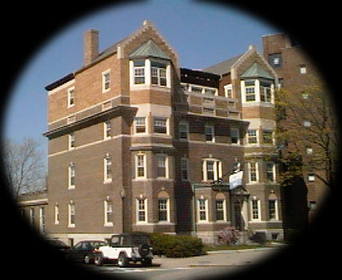

This page will soon be full of questions that incoming freshmen ask. Obviously, it will also provide the answers. Check back in a few days.
Q: Should I rush TDC?
A: Yes. Of course
Q: I've heard all this great stuff about TDC, but what does it look like?
A: 
Q: How can I reach you guys?
A: You can call us at 617-494-8300. Ask for Ian Ingram, he's the guy you want to talk to. If you'd rather email, write to egern@mit.edu. If you'd like to request more info, click here.
Theta Delta Chi
372 Memorial Dr.
Cambridge, MA 02139